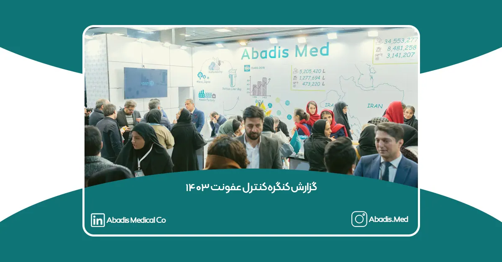
گزارش تصویری از حضور شرکت دانش بنیان مخازن طبی آبادیس در دوازدهمین کنگره تخصصی و ششمین کنگره بین المللی کنترل عفونت و استریلیزاسیون مواد، تجهیزات پزشکی:
دوازدهمین کنگره تخصصی و ششمین کنگره بین المللی کنترل عفونت و استریلیزاسیون،مواد و تجهیزات پزشکی در تاریخ ۲۷ و ۲۸ آذرماه ۱۴۰۳ از ساعت ۸:۳۰ صبح الی ۶ بعدازظهر،در سالن همایشهای بین المللی رازی،دانشگاه علوم پزشکی ایران برگزار گردید.
دوازدهمین کنگره تخصصی کنترل عفونت با حضور ۱۲۷۵ بازدیدکننده از جمله مدیران بیمارستانها، پزشکان، پرستاران، کارشناسان کنترل عفونت، کارشناسان بهداشت محیط و بهداشت حرفهای، مسئولین CSR و CSSD برگزار شد. در این کنگره ۲۹ شرکت غرفه داشتند و فرصتی برای معرفی محصولات و خدمات خود به مخاطبان این صنعت یافتند.
هدف کنگره کنترل عفونت ۱۴۰۳ کاهش عفونتهای ناشی از مراقبت و خدمات سلامت، ارتقاء سطح سلامت جامعه با ارایه جدیدترین دستاوردهای پژوهشی و علمی و یکپارچه سازی و هماهنگی دستگاهها ونهادهای فعال درحوزه پیشگیری و کنترل عفونت بود.
گزارش دوربین سلامت از دوازدهمین کنگره تخصصی و ششمین کنگره بین المللی کنترل عفونت و استریلیزاسیون، مواد و تجهیزات پزشکی:
مراسم افتتاحیه این کنگره در روز سه شنبه ۲۷ آذر ۱۴۰۳ در سالن یک مرکز همایشهای رازی از ساعت ۸:۳۰ الی ۱۰:۳۰ برگزار شد. در مراسم افتتاحیه جناب آقایان دکتر شاهقدمی، دکتر نوروزی، دکتر زالی، دکتر شهریاری، دکتر انصاری، دکتر رئیسی، دکتر عبادی، دکتر واعظی، دکتر جندقی و سرکار خانم دکتر قربانی در راستای اهداف و شعار کنگره سخنرانی نمودند.
مصاحبه جناب آقای دکتر شاهقدمی دبیر علمی کنگره کنترل عفونت در برنامه مثبت سلامت شبکه سلامت سیما:
در مراسم افتتاحیه دوازدهمین کنگره تخصصی کنترل عفونت دکتر علیرضا زالی، رئیس دانشگاه علوم پزشکی شهید بهشتی، بر لزوم تدوین سند ملی برای پیشگیری و کاهش عفونتهای بیمارستانی تأکید کرد. وی شستوشوی صحیح دستها را بهعنوان مهمترین راهکار کاهش عفونتها معرفی نمود و افزود که عفونتهای بیمارستانی میتوانند بین ۸ تا ۱۲ روز به مدت بستری بیماران بیفزایند، که این موضوع نشاندهنده اهمیت اقدامات پیشگیرانه است. دکتر زالی همچنین بیان کرد که تدوین دستورالعملهای مناسب و اجرای دقیق آنها در بیمارستانها نقش بسزایی در کاهش این نوع عفونتها دارد.
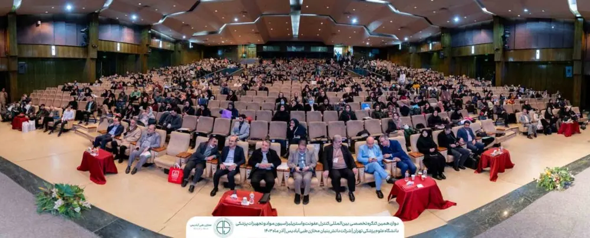
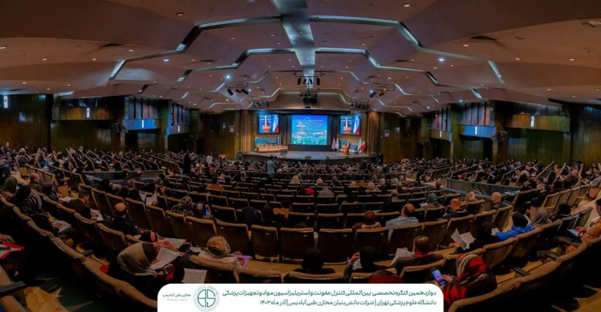
این کنگره شامل ارائه ۷۱ مقاله علمی، برگزاری ۱ کارگاه تخصصی و ۸ پانل بود که موضوعات مهم در زمینه کنترل عفونت را پوشش دادند.
شرکت دانشبنیان مخازن طبی آبادیس، بزرگترین و اولین تولیدکننده کیسه ساکشن یکبار مصرف در ایران، با افتخار در دوازدهمین کنگره تخصصی کنترل عفونت که در تاریخ 27 و 28 آذرماه 1403 در مرکز بینالمللی همایشهای رازی برگزار شد، در غرفه ۵۱ و ۵۲ حضور داشت. این کنگره به عنوان یکی از معتبرترین رویدادهای علمی در حوزه کنترل عفونت، فرصتی ایدهآل برای نمایش دستاوردها و محصولات پیشرو این شرکت بود.
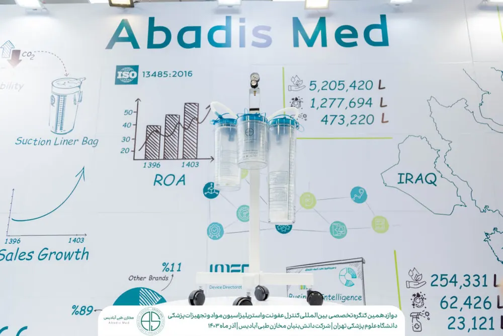
شرکت دانشبنیان مخازن طبی آبادیس، بهعنوان یکی از پیشروان صنعت تجهیزات پزشکی و تولیدکننده کیسههای ساکشن یکبار مصرف، با حضور در دوازدهمین کنگره تخصصی کنترل عفونت، گامی مهم در جهت تقویت ارتباطات تخصصی و ارائه دستاوردهای نوآورانه خود برداشت.
کنگره کنترل عفونت ۱۴۰۳، فرصت مناسبی برای ارائه آخرین محصولات و خدمات این شرکت به متخصصین، پزشکان و مدیران بیمارستانها فراهم آورد.
شرکت دانشبنیان مخازن طبی آبادیس، پیشگام در تولید کیسههای ساکشن یکبار مصرف و با در اختیار داشتن 89 درصد از بازار این محصول در ایران، در دوازدهمین کنگره تخصصی کنترل عفونت، حضوری چشمگیر و تأثیرگذار داشت.
شرکت دانش بنیان مخازن طبی آبادیس در این کنگره بر دستاوردهای هفتساله خود در زمینه کاهش انتقال عفونت، صرفهجویی در منابع و کاهش هزینهها و حفاظت از محیط زیست تمرکز داشت. از همین رو شرکت آبادیس در طراحی غرفه خود این دستاوردها را به نمایش گذاشت.
یکی از نکات برجسته حضور شرکت مخازن طبی آبادیس در این کنگره، ارائه کیسههای ساکشن یکبار مصرف با ویژگیهای منحصربهفرد و سازگار با محیط زیست بود که بهعنوان راهکاری نوین در کاهش عفونتهای بیمارستانی معرفی شدند. در طول این دو روز، غرفه آبادیس میزبان تعداد زیادی از متخصصان حوزه کنترل عفونت، پرستاران، کارشناسان بهداشت محیط، پزشکان و مدیران بیمارستانها بود. بازدیدکنندگان از نزدیک با نوآوریهای آبادیس آشنا شدند و درباره تاثیر محصولات آبادیس در بهبود شرایط محیط زیستی، کاهش عفونتها و مدیریت پساب عفونی مراکز درمانی اطلاعات کاملی دریافت کردند.
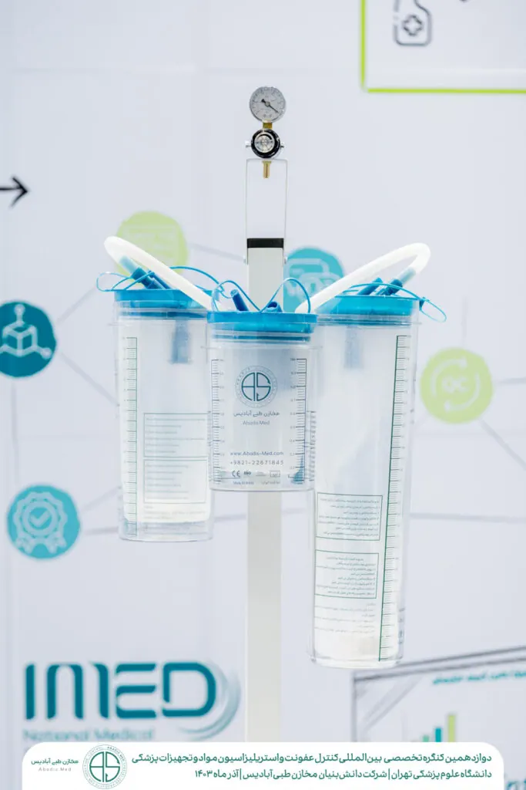
همچنین تیم متخصص آبادیس در طول برگزاری کنگره با ارائه توضیحات فنی و پاسخ به سوالات بازدیدکنندگان، تعاملات ارزشمندی با شرکتکنندگان داشتند. بحثها و گفتگوهای انجامشده در غرفه، بستری مناسب برای تبادل اطلاعات علمی و تجاری فراهم کرد. از جمله موضوعاتی که بازدیدکنندگان به آن علاقهمند بودند، نقش کیسههای ساکشن یکبار مصرف در کاهش انتقال عفونتهای بیمارستانی بود. این تعاملات منجر به برقراری ارتباطات ارزشمند و ایجاد فرصتهای جدید همکاری شد.
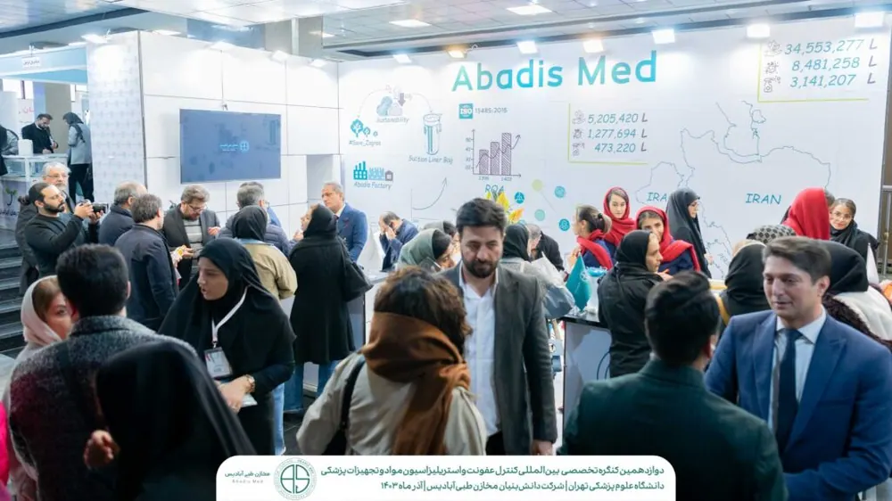
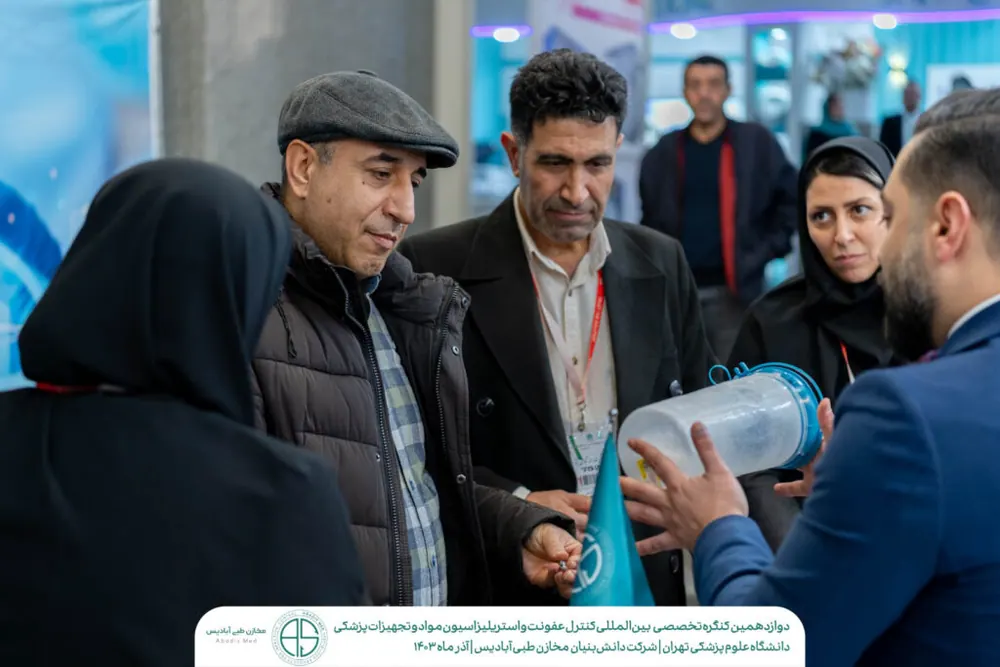
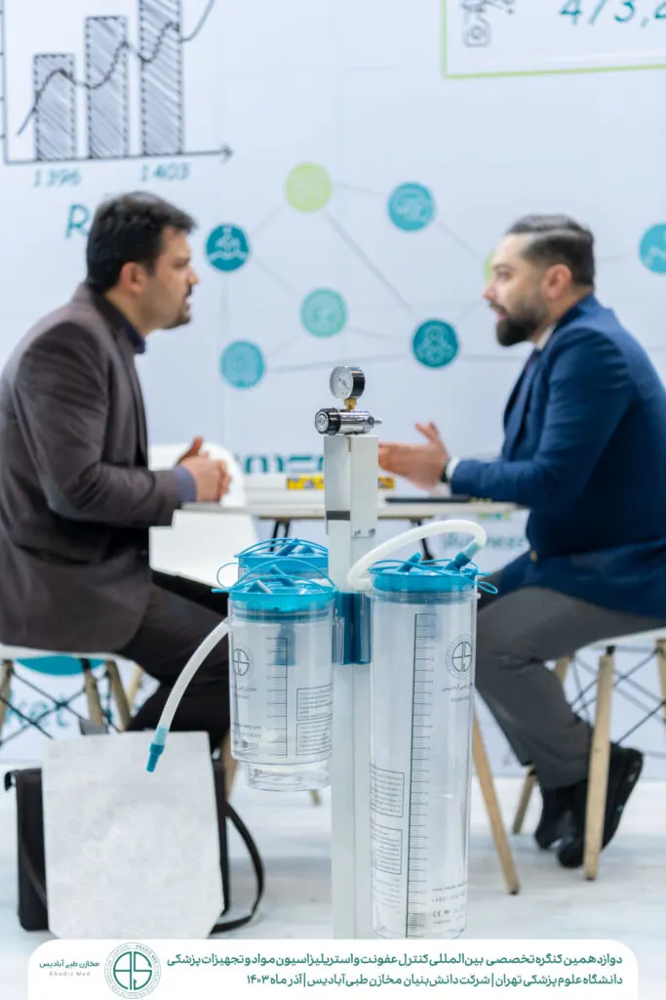
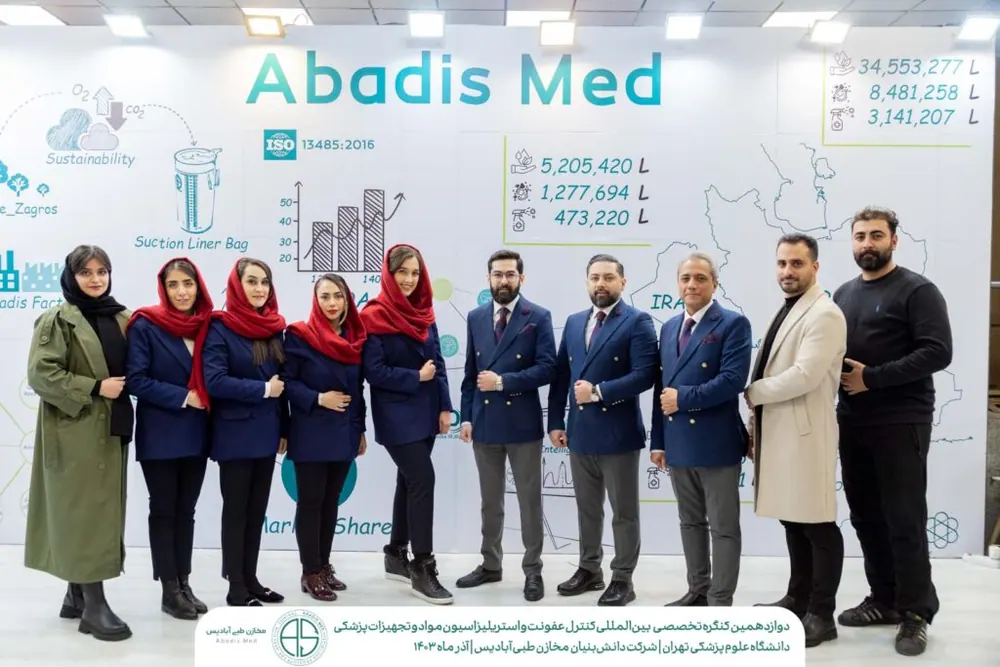
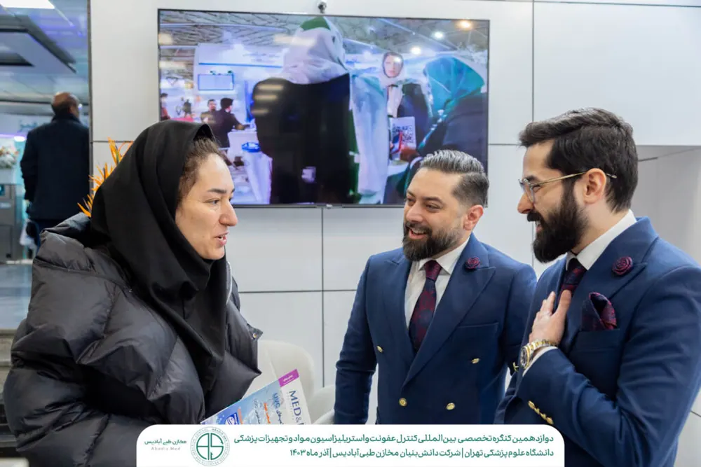
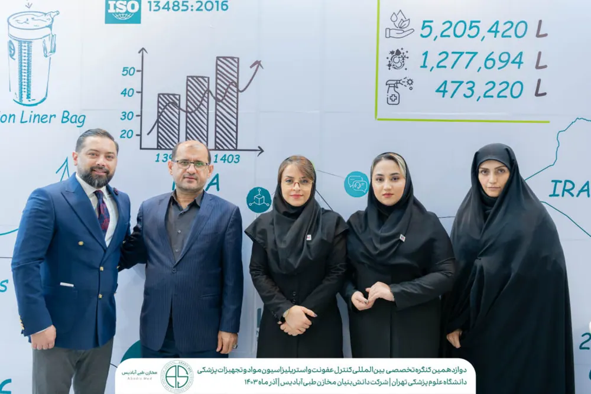
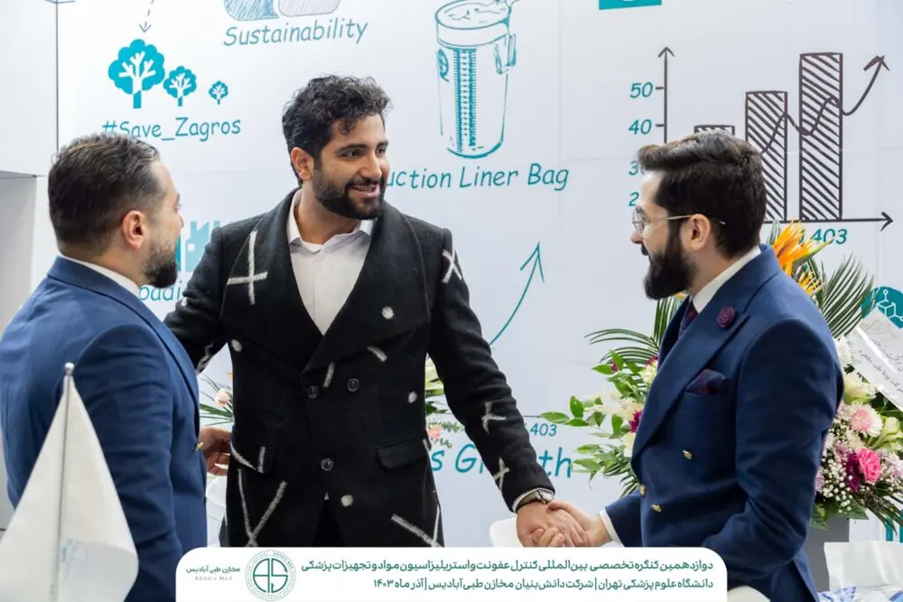
در طراحی غرفه شرکت آبادیس، نقشهای از ایران، عمان و عراق با نمایش اطلاعات میزان صرفه جویی در آب و مواد ضدعفونی کننده و همچنین میزان جمع آوری خون و مواد عفونی به چشم میخورد که مورد استقبال قابل توجهی قرار گرفت. این دستاوردها شامل آمارهایی بیانگر تاثیرات گسترده محصولات آبادیس در حفاظت از محیط زیست، حفظ منابع و کاهش آلایندهها و کاهش هزینهها برای مراکز درمانی در کشورهای ایران، عراق و عمان است. در ادامه به این آمارها تا تاریخ ۳۰ آذر ۱۴۰۳ اشاره شده است:
در ایران:
- صرفهجویی در مصرف ۳۴,۵۵۳,۲۷۷ میلیون لیتر آب
- جلوگیری از ورود ۸,۴۸۱,۲۵۸ میلیون لیتر پساب عفونی بیمارستانی به محیط زیست
- کاهش مصرف ۳,۱۴۱,۲۰۷ میلیون لیتر مواد ضدعفونیکننده
در عراق:
- صرفهجویی در مصرف ۵,۲۰۵,۴۲۰ میلیون لیتر آب
- جلوگیری از ورود ۱,۲۷۷,۶۹۴ میلیون لیتر پساب عفونی بیمارستانی
- کاهش مصرف ۴۷۳,۲۲۰ میلیون لیتر مواد ضدعفونیکننده
در عمان:
- صرفهجویی در مصرف ۲۵۴,۳۳۱ میلیون لیتر آب
- جلوگیری از ورود ۶۲,۴۲۶ میلیون لیتر پساب عفونی بیمارستانی
- کاهش مصرف ۲۳,۱۲۱ میلیون لیتر مواد ضدعفونیکننده
استفاده از کیسههای ساکشن یکبار مصرف آبادیس منجر به صرفهجویی در مصرف آب، مواد ضدعفونیکننده و هزینههای مدیریت پسماند میشود.
در طول کنگره، شرکت آبادیس با ارائه محصولات باکیفیت و خدمات پس از فروش جامع، توجه بسیاری از بازدیدکنندگان را به خود جلب کرد. بخش دیگری از غرفه به معرفی مزایای رقابتی آبادیس اختصاص داشت. این مزایا شامل موارد زیر بود:
- گارانتی و وارانتی محصولات
- تضمین کیفیت
- ارتباط مستمر تیم فروش و فنی با مراکز درمانی
- ارسال رایگان و سریع محصولات
- قابل اعتماد و اطمینان
- نگاه علمی و تخصصی به کنترل عفونت و محیط زیست
- خدمات پس از فروش مناسب و با کیفیت
- استفاده از فناوریهای نوین در مدیریت و ساختار سازمانی
- بالاترین ظرفیت تولید کیسه ساکشن یکبار مصرف در خاورمیانه
- راحتی و سهولت در استفاده
- تضمین اصالت کالا
- پشتیبانی فروش از لحظه ارتباط و ثبت سفارش
- اطلاعرسانی بهموقع از وقایع و کمپینها
- رضایت مشتریان
در قسمتی دیگر از این طراحی و دستاوردها به تحلیل داده در آبادیس با استفاده از هوش تجاری اشاره شده بود. آبادیس با استفاده از ابزارهای پیشرفته تحلیل داده و شاخصهای کلیدی عملکرد (KPI)، عملکرد تولید، فروش و خدمات پس از فروش را به دقت پایش میکند. این رویکرد دادهمحور، به آبادیس امکان میدهد که بهسرعت به تغییرات بازار پاسخ دهد و خدمات بهتری به مشتریان ارائه کند.
یکی از اقدامات برجسته شرکت آبادیس در حوزه مسئولیت اجتماعی و حفظ محیط زیست، پروژه نجات زاگرس در راستای توسعه پایدار است .در این پروژه، ۴۰۰ اصله نهال بلوط به سازمان مردمی دالاهو اهدا و در ارتفاعات زاگرس به نام مراکز درمانی عضو خانواده سبز آبادیس کاشته شد. این اقدام با استقبال گسترده مواجه شد و شرکت آبادیس اعلام کرد که قصد دارد در آینده نزدیک ۴۰۰۰ اصله نهال دیگر نیز به این پروژه اهدا کند.
شرکت مخازن طبی آبادیس از تمامی بیمارستانها و مراکز درمانی دعوت میکند تا به خانواده سبز آبادیس بپیوندند و از مزایای محصولات باکیفیت، خدمات پیشرفته و تعهد به پایداری زیستمحیطی بهرهمند شوند. برای اطلاعات بیشتر، لطفاً به وبسایت این شرکت به نشانی www.Abadis-Med.com مراجعه کرده یا با آنها تماس بگیرید.
مصاحبه مدیران آبادیس در راستای دستاوردهای ۷ ساله شرکت مخازن طبی آبادیس:
در روز سه شنبه ۲۷ آذر ماه ۱۴۰۳، مدیران آبادیس با خبرگزاری صدا و سیما، مصاحبه ای داشتند. در این مصاحبه معاونت بازرگانی و فروش آبادیس جناب آقای مهندس نوید حسنعلی به میزان صرفه جویی در آب و مواد ضدعفونی کننده و همچنین میزان جمع آوری خون و مواد عفونی در کشور عزیزمان ایران در طی ۷ سال اشاره نمود. همچنین ایشان اظهار کرد استفاده از کیسه ساکشن یکبار مصرف باعث تحول در کنترل عفونت در مراکز درمانی شده است. وی افزود به پاس حفاظت از محیط زیست و جلوگیری از ورود ضایعات به محیط زیست به نام خانواده سبز آبادیس درختان بلوط در منطقه زاگرس کاشته شده است. در ادامه این مصاحبه، ایشان تأکید کردند که شرکت مخازن طبی آبادیس تنها تولیدکننده کیسههای ساکشن یکبار مصرف در جهان است که فیلترهای متخلخل این کیسهها را نیز بهصورت مستقل تولید مینماید.
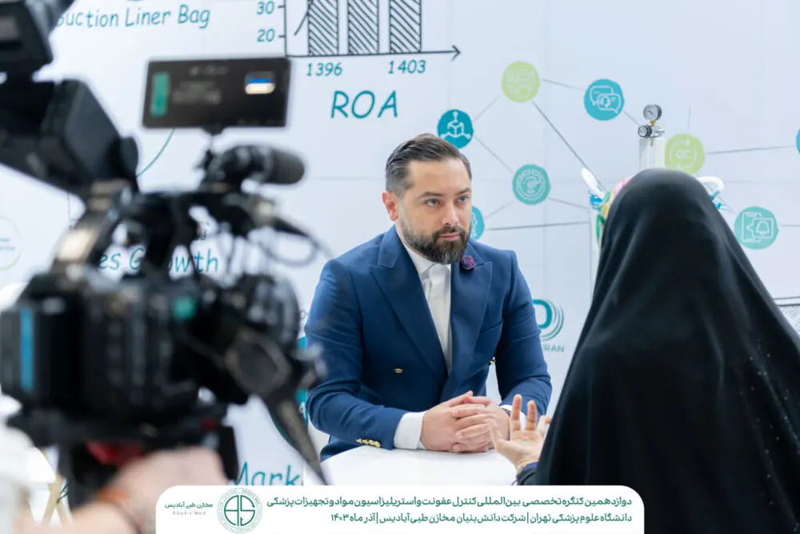
مصاحبه معاونت بازرگانی و فروش مجموعه آبادیس با خبرگزاری صدا و سیما:
مراسم اختتامیه این رویداد با شور و حال یلدایی و گرامیداشت روز مادر برگزار شد و به لحظات پایانی این رویداد جلوه ویژهای بخشید. مراسم اختتامیه کنگره با حضور مدیران اجرایی و جمعی از شرکتکنندگان برگزار شد. در این مراسم، آبادیس قرعهکشی ویژهای برگزار کرد و به یک نفر از شرکتکنندگان خوششانس هدیهای به ارزش 25 میلیون تومان تقدیم گردید. این بخش از برنامه، بازخوردهای مثبت بسیاری را از سوی حاضران دریافت کرد و این اقدام موجب ایجاد شور و هیجان در میان بازدیدکنندگان شد و استقبال گستردهای را به همراه داشت.
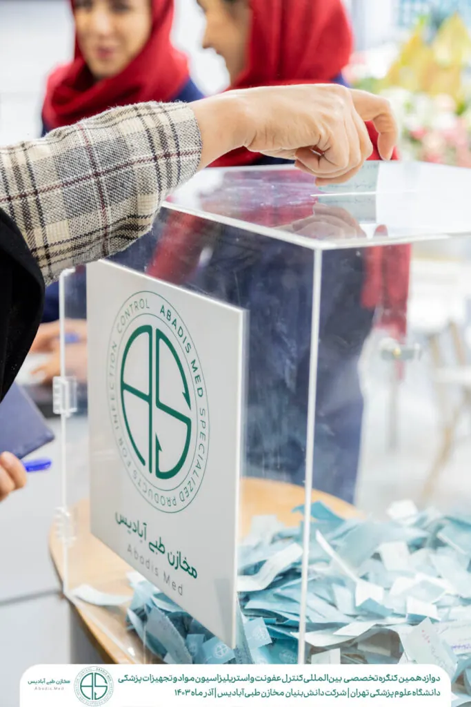
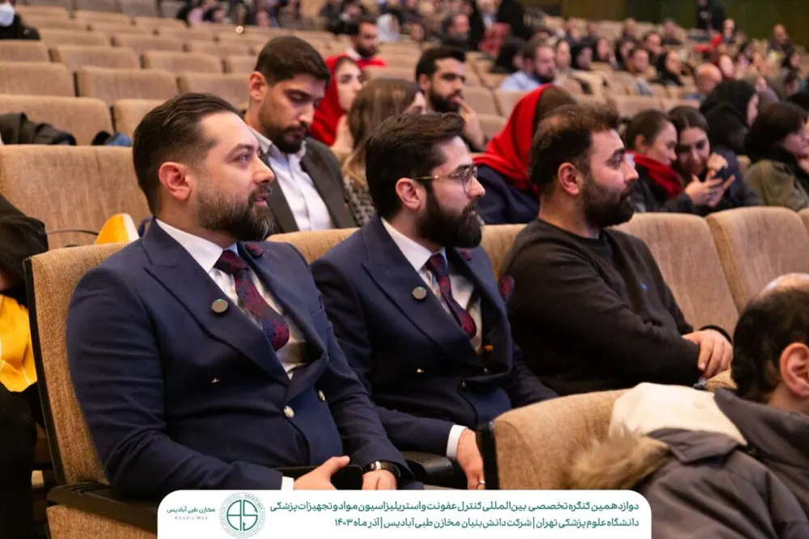
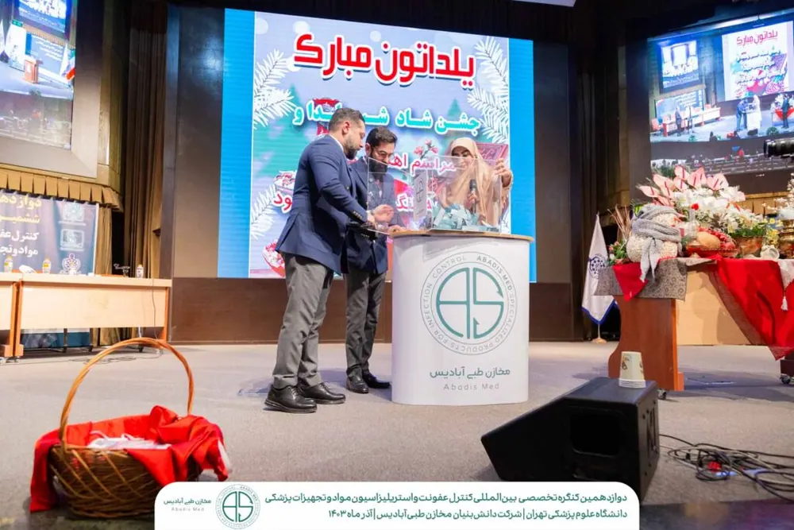
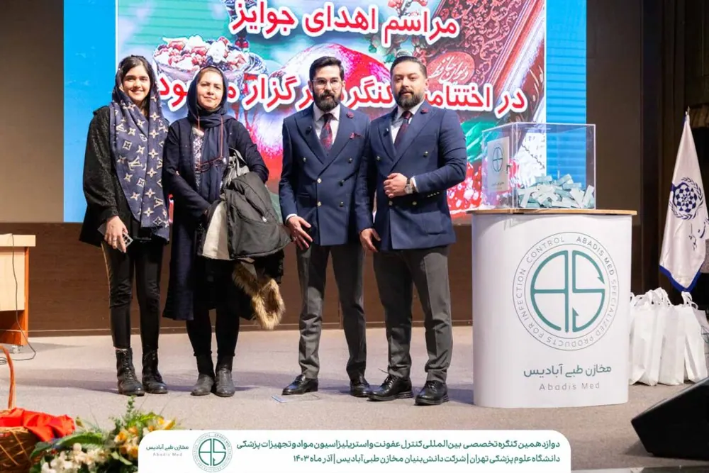
حضور موفق شرکت دانشبنیان مخازن طبی آبادیس در این رویداد، بار دیگر جایگاه رهبری این شرکت را در حوزه کنترل عفونت و تجهیزات پزشکی به نمایش گذاشت و فرصتی برای توسعه همکاریهای جدید و گسترش بازارهای هدف فراهم کرد.
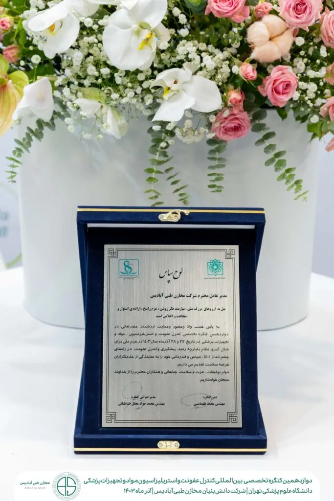